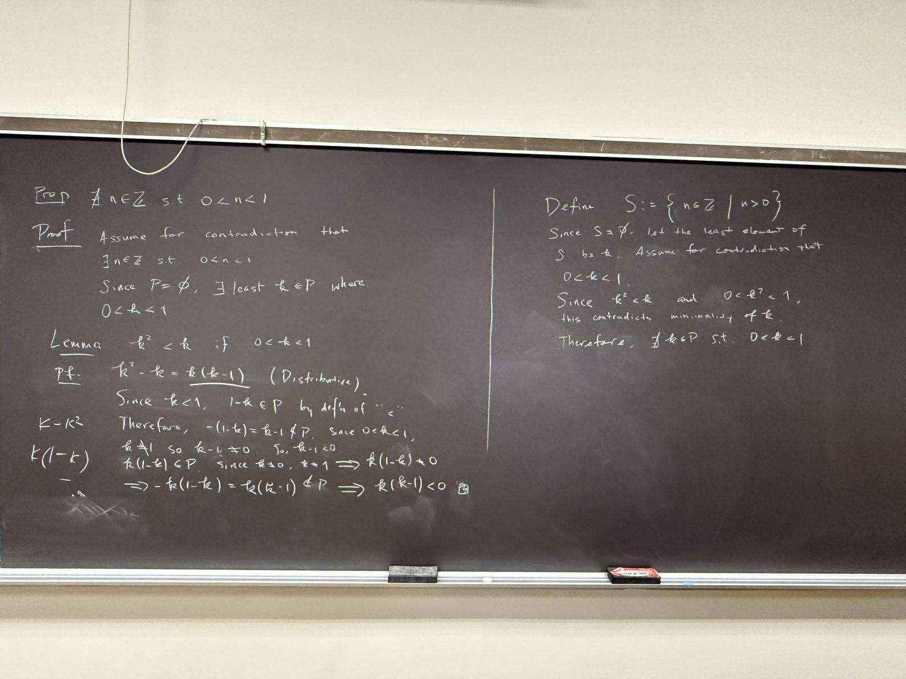
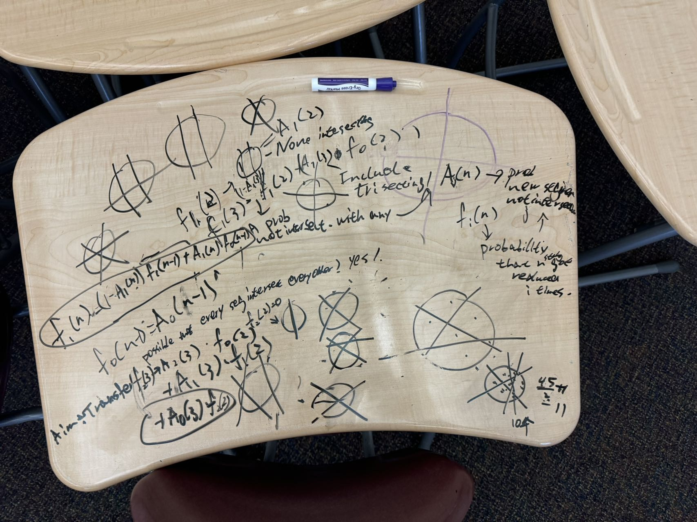
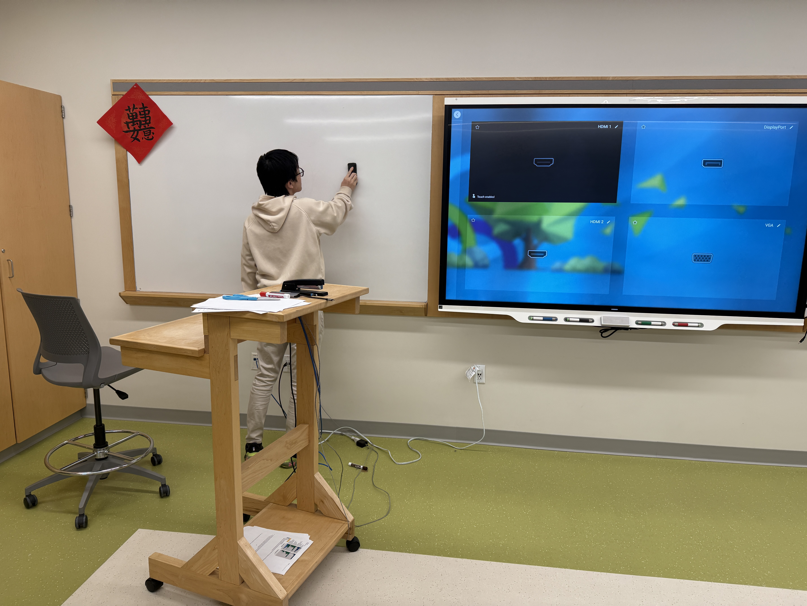
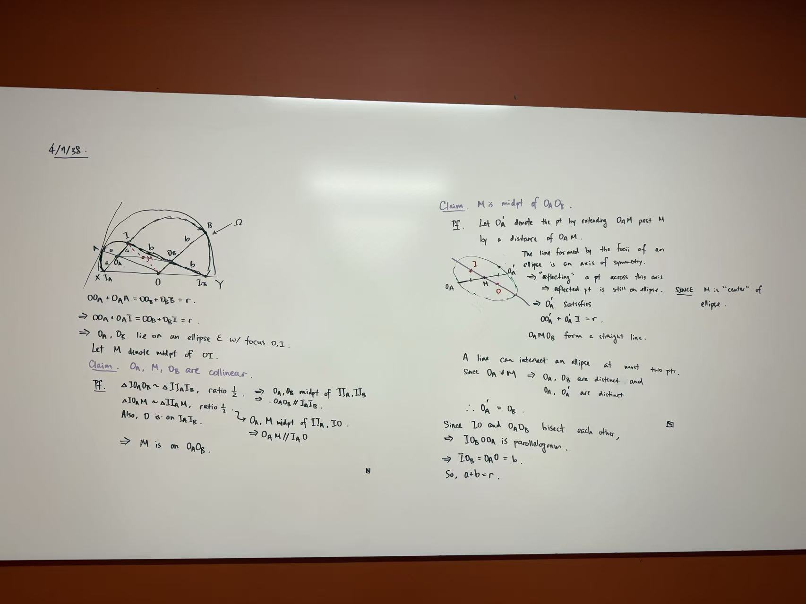

I’ll be honest about something up front: I was never the naturally gifted one. The kids who saw the trick instantly, who finished the test with twenty minutes to spare and looked bored doing it -- that was never me. What I had instead was a stubborn refusal to believe that “not yet” meant “not ever.”
Early on, a teacher pulled me aside and told me, plainly, to stop trying. I’d never make the AIME. I didn’t have the talent for it, and I was wasting time I could spend on something I was actually good at. He wasn’t being cruel about it -- I think he believed he was saving me from disappointment. And the hard part is that he was half right. I didn’t have the talent. I just decided that wasn’t the whole sentence.
It wasn’t only teachers. Some of the hardest arguments happened at home. My parents didn’t always understand why I was pouring hour after hour into problems that might never pay off, why I’d stay up chasing a proof instead of doing something safer and more sensible with the time. There were a lot of long, frustrating conversations -- more than a few I’m not proud of -- where I kept defending a thing I couldn’t yet prove was worth anything. When you have nothing to show for it, “trust me” is a terrible argument, and I made it constantly.
So I worked. Not in the inspiring-montage way -- in the boring, repetitive, one-more-problem-set way. I started competition math in sixth grade with Dr. Shi, and for years getting better just meant more reps: more problems, more dead ends, more evenings stuck on something everyone else seemed to find obvious. I wasn’t fast. I was just very hard to discourage for long.

The results came eventually, and slowly. I made the AIME -- the exact thing I’d been told was out of reach -- and eventually scored a 12 on it, the highest in my school’s history. I qualified for the USAMO, the first student from my school ever to do it. Gold on the USAMTS at 74 out of 75. A national title with MathLeague. None of it came from some talent I finally unlocked. It came from the hours, and nothing else. And when the results finally showed up, they made a case at home that I never could have won with words.

Somewhere in there, the medals stopped being the point. Mrs. Boyer once dared me to actually learn multivariable calculus, and I came back with a 360-page textbook on it that my school now teaches from. Last summer I spent weeks at the Ross program working through number theory with no answer key at all -- just the problem, and however long it took to actually understand it.
I still don’t walk into a room as the most talented person in it, and I’ve made my peace with that. What I’ve figured out is that talent sets where you start, not where you finish, and that being willing to outwork the doubt -- your teachers’, your parents’, and on the bad days your own -- carries you a lot further than people want to admit.
I don’t hold that teacher’s comment against him anymore. In a strange way I owe him for it: he handed me a very specific thing to prove wrong, and setting out to prove it wrong is how I learned the way I actually work. It turns out I never needed the talent. I just needed to not stop.
There’s a part of that story I keep leaving out, because it spoils the version where I did it by myself. I didn’t. When I was a freshman sitting at the back of BC Calculus, Peter Huang was 2 years ahead of me, and for reasons I still don’t fully understand he decided I was worth the time. He dragged me into Math Club and started dissecting a 3Blue1Brown video. He showed the "What Makes a Great Math Explanation? - 3Blue1Brown" video and I really didn't see why I ever needed to explain or present anything to anyone if my answer was right. He gave the impression that math was anything but "just math," and the art behind it was incomprehensible. He told us there were so many fields beyond just core school and olympiad mathematics.
Before that, competition math was a test I took once a year and did badly on. Nobody had told me it was a subject you could train for, with a literature and a culture and people who stayed late arguing about it. Peter treated it that way and just started handing me pieces of it -- problems, links, the names of things I’d never heard of. He and the teacher who told me to quit were, as far as I can tell, looking at the same kid and reading the same evidence. One of them concluded I should go find something easier. The other one started showing me harder problems.

What stuck wasn’t technique. A few years ago, my intuition was terrible, and I couldn't react to a topic we literally just learned. But Peter never criticized my often slow intuition. Instead, he invited every "why" I asked and made us appreciate all the proofs behind something simple.
Most of the time, he was seen as the guy standing at a whiteboard, explaining something to someone who didn’t get it yet, visibly enjoying it. I had assumed that was a thing teachers did because it was their job. It hadn’t occurred to me that a student would choose it.
So when people ask why so much of my time goes to the teaching end of this - SSAMO, the monthly problem sets, the abstract algebra course, captaining ARML, the textbooks - I really never kept track. I'm trying to finish the things Peter never had a chance to. I co-founded SSAMO and built our math club into something that competes nationally because I wanted the younger kids to have on day one what I spent years not knowing existed.
The funny thing is that he’s graduated now, and the strange part of senior year is that I’m the one at the board. It's also only after he graduated that I realized what he meant by the "show, not tell" aspect of mathematics, and how all the difference between a good teacher and a good problem-solver is presentation. I can't guarantee that I'll live up to the expectations placed on him, but it's worth a shot anyway.
